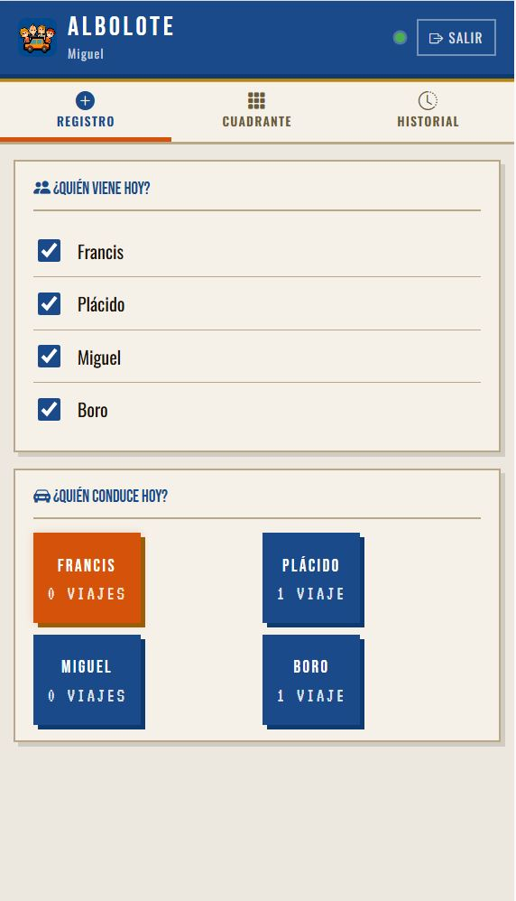
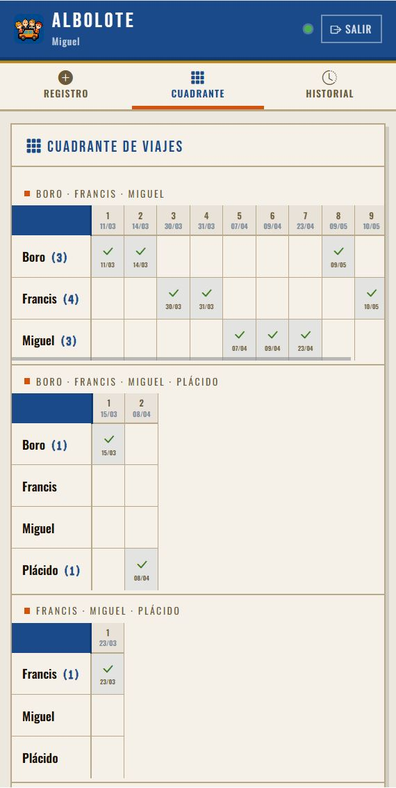
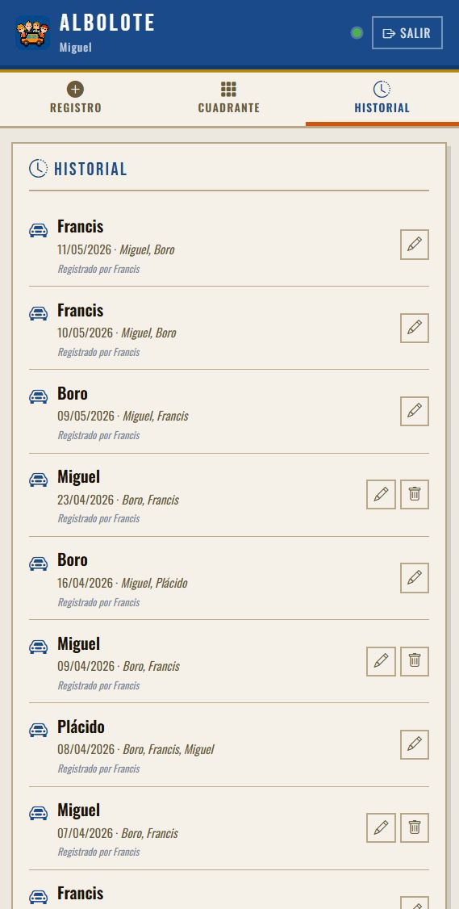
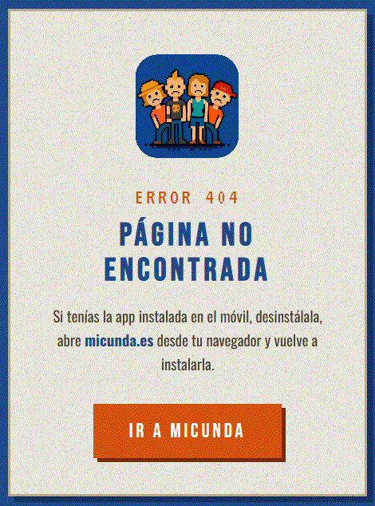

¿Qué es miCunda?
miCunda es una app para grupos de personas que comparten coche para ir al trabajo. Registra quién conduce cada día, lleva la cuenta automáticamente y sugiere a quién le toca conducir para que el reparto sea siempre justo.
Cada grupo es una cunda. Hay dos tipos de usuario:
- Administrador Admin — Gestiona la cunda, los miembros y tiene acceso completo.
- Editor Editor — Puede registrar y editar viajes. Es el rol habitual.
Acceder a la app
- Abre micunda.es en el navegador del móvil (Chrome recomendado en Android)
- Escribe tu email y contraseña (te los facilita el administrador)
- Pulsa Entrar
Indicador de conexión
En la cabecera de la app, junto al nombre de la cunda, hay un pequeño punto que indica el estado de la conexión:
Conectado Sin conexión
Si el punto está rojo, la app no puede guardar viajes en ese momento. Comprueba tu red antes de registrar.
Pestaña Registro
Aquí se registra el viaje del día. Úsala cada mañana antes de salir.
- Marca quién viene hoy — desmarca a quien no venga
- La app muestra una sugerencia (nombre resaltado): es quien menos veces ha conducido en ese grupo exacto
- Pulsa el botón del conductor para registrar el viaje
- Confirma en el mensaje emergente
⚠️ Sin conexión al registrar
Si intentas guardar un viaje sin internet, aparecerá un aviso naranja con el botón Reintentar. Cuando recuperes la cobertura, pulsa Reintentar y el viaje se guardará automáticamente.
Pestaña Cuadrante
Tabla visual con todos tus viajes registrados, organizada en bloques.
- Cada bloque es una combinación de personas que van juntas habitualmente
- Las filas son los miembros y las columnas son los viajes (con fecha)
- El número (N) junto a cada nombre indica cuántas veces ha conducido en ese bloque
- Los miembros que ya no están en la cunda aparecen con el nombre tachado
Al final del cuadrante puedes ver (desplegando):
- Cuadrantes de otros miembros Solo Admin — bloques en los que no participas
- Cuadrantes eliminados — bloques ocultos que siguen guardados y se pueden restaurar
Pestaña Historial
Lista de los últimos viajes registrados, con fecha, conductor, pasajeros y quién lo registró o modificó.
Los botones de editar y borrar solo aparecen si tienes permiso sobre ese viaje concreto:
| Acción | Conductor | Pasajero | No participó | Admin |
|---|---|---|---|---|
| ✏️ Editar | ✅ | ✅ | ❌ | ✅ |
| 🗑️ Eliminar | ✅ | ❌ | ❌ | ✅ |
Aviso de novedades
Cuando abres la app o vuelves de tenerla en segundo plano, aparece automáticamente un aviso si desde tu última visita alguien ha registrado, editado o eliminado un viaje en el que ibas.
▶ Juan registró el 12/05 (eras el conductor)
▶ María editó el viaje del 10/05 (ibas de pasajero)
▶ Pedro eliminó el viaje del 08/05 (eras el conductor)
Pulsa Entendido para cerrar el aviso.
Email semanal
Un día a la semana a las 17:00 recibirás un email con:
- Resumen de los viajes de esa semana
- Tu cuadrante de viajes — solo los bloques en los que participas
- Listado de modificaciones realizadas esa semana sobre viajes ya registrados. Si no hay ninguna, indica "No hay modificaciones de registro esta semana"
Crear una cunda (primera vez)
- Abre micunda.es
- Pulsa la pestaña "Crear mi cunda"
- Rellena: nombre de la cunda, tu nombre, email y contraseña
- Pulsa Crear cunda — entrarás automáticamente como administrador
Añadir miembros
- Ve a Admin → pulsa Añadir miembro
- Rellena los datos:
- Nombre — como aparecerá en el cuadrante (debe ser único en la cunda)
- Email — dirección de correo del miembro
- Contraseña — la que le asignes (puedes comunicársela directamente)
- Rol — Editor (lo habitual) o Administrador
- Fecha de incorporación — los viajes anteriores a esta fecha no le afectarán
- Pulsa Añadir y comparte el email y contraseña con el nuevo miembro
Editar un miembro
Para cambiar el email, la contraseña o el rol de un miembro:
- Ve a Admin → pulsa el icono ✏️ junto al nombre del miembro
- Modifica los campos que necesites:
- Email — nueva dirección de correo
- Nueva contraseña — déjala en blanco si no quieres cambiarla
- Rol — Admin o Editor
- Pulsa Guardar
Eliminar un miembro
Cuando alguien deja la cunda:
- Ve a Admin → pulsa el icono 🗑️ junto a su nombre
- Confirma la eliminación
El miembro ya no podrá acceder, pero sus viajes históricos se conservan en el historial y en el cuadrante (su nombre aparecerá tachado).
Importar viajes anteriores
Si la cunda ya funcionaba antes de usar miCunda, puedes introducir los viajes pasados para que los contadores sean correctos desde el principio.
- Ve a Admin → pulsa Importar viajes anteriores
- Para cada viaje: selecciona la fecha, el conductor y marca quién vino
- Pulsa Guardar y añadir otro — la fecha retrocede un día automáticamente
- Cuando termines pulsa Cerrar
Gestionar bloques del cuadrante
🗑️ Ocultar un bloque
Cuando una combinación de personas ya no se va a repetir (ej: alguien dejó la cunda o entró alguien nuevo):
- En el Cuadrante, pulsa el icono 🗑️ en la esquina del bloque
- Confirma → el bloque desaparece de la vista de todos los miembros
👥 Ver cuadrantes de otros miembros
Al final del cuadrante, el administrador puede desplegar "Ver cuadrantes de otros miembros" para ver y gestionar los bloques de viajes en los que no participó directamente.
👁️ Restaurar un bloque oculto
Al final del cuadrante → desplegar "Ver cuadrantes eliminados" → pulsa Restaurar junto al bloque que quieras recuperar.
Preguntas frecuentes
